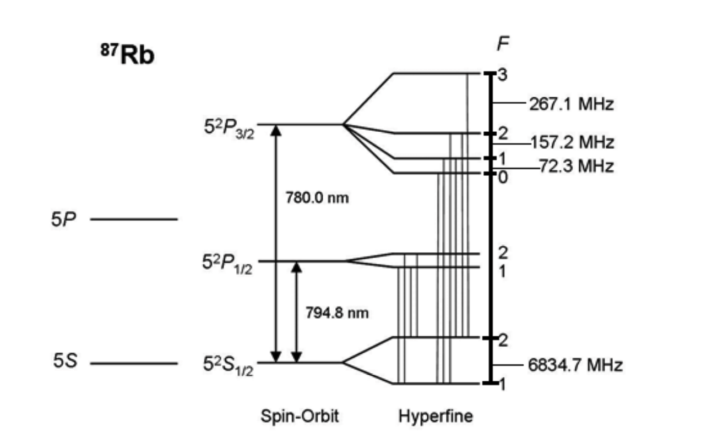
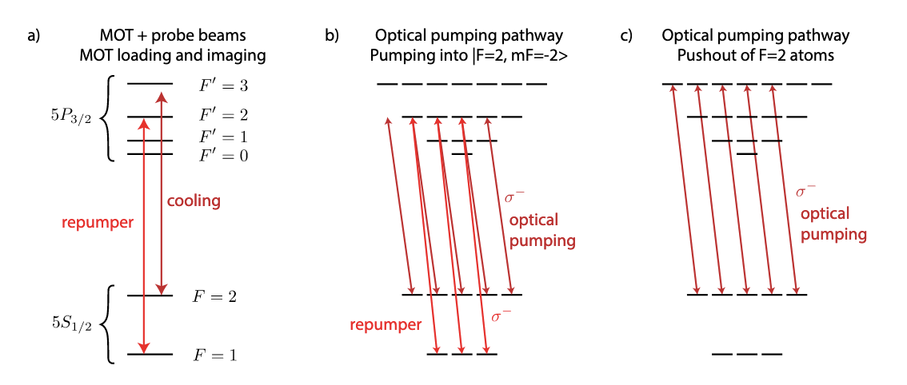

Rb87 Laser Summary
Summary of Rb Properties

The current MOT optical path in the Hefeilab is shown in Figure Figure 2:

Cooling Laser Setup

The involved laser wavelength is 780 nm, mainly used for:
1. Repumper Light
- Transition: Drives the transition from ground state 5S_{1/2}, F=1 to excited state 5P_{3/2}, F' = 2.
- Function: Pumps atoms that have fallen into a dark state (F=1) back into the cycling transition (F=2).
Technical Implementation Details: The laser is first locked onto the crossover peak (Crossover) between F = 1 \to F' = 1 and F = 1 \to F' = 2, then shifted in frequency by +78.5 MHz via an acousto-optic modulator (AOM) to precisely match the resonance at F = 1 \to F' = 2.
2. Cooling Light
- Transition: Drives a cycling transition from ground state 5S_{1/2}, F=2 to excited state 5P_{3/2}, F' = 3, used in conjunction with the Repumper.
- Function: MOT capture and Doppler cooling.
Principle: Utilizes laser cooling principles (Doppler cooling) by generating scattering forces through red-detuned beams to slow down and trap atoms in a potential well center.
3. Optical Pumping Light
- Transition: Drives the transition from ground state 5S_{1/2}, F=2 to excited state 5P_{3/2}, F' = 2, \sigma^+ (+1 polarization) or \sigma^-, used in conjunction with the Repumper.
- Function: Quantum state initialization.
Physical Process: Forces the magnetic quantum number of atoms to a specific state (dark state). For example: Using \sigma^+ circularly polarized light pumps atoms into the |F=2, m_F=2\rangle state (as shown in Figure (b)).
4. Depumping Light
- Transition: Drives the transition from ground state 5S_{1/2}, F=2 to excited state 5P_{3/2}, F' = 2, no polarization requirement, not used with Repumper.
- Function: Used for state cleaning and auxiliary readout. Transfers all F=2 state atoms to the F=1 state.
Readout Verification Logic: Quantum bits are encoded in F=1 (dark) and F=2 (bright). To distinguish between “atom is in F=1” and “atom lost”, double imaging verification is typically used:
First Image: Direct imaging. Seeing a bright spot \rightarrow confirms the atom is in F=2.
Operation: Use Depumping light to force all F=2 atoms into F=1.
Second Image: Re-imaging. This should theoretically be completely dark.
- This image is used for subtracting background noise (such as glass reflections).
- If there are still bright spots, it indicates stray light rather than atomic signals.
5. Push-out / Blow-away Light
- Transition: Drives the transition from ground state 5S_{1/2}, F=2 to excited state 5P_{3/2}, F' = 3 (resonant), not used with Repumper.
- Function: State-selective removal.
Mechanism: During the readout phase, to distinguish between atoms in the F=2 state and those in the F=1 state: A strong beam resonant at F=2 \to F' = 3 is used to illuminate the atoms without adding repumping light. * F=2 atoms: Experience intense scattering and are pushed away. * F=1 atoms: Remain due to large detuning.